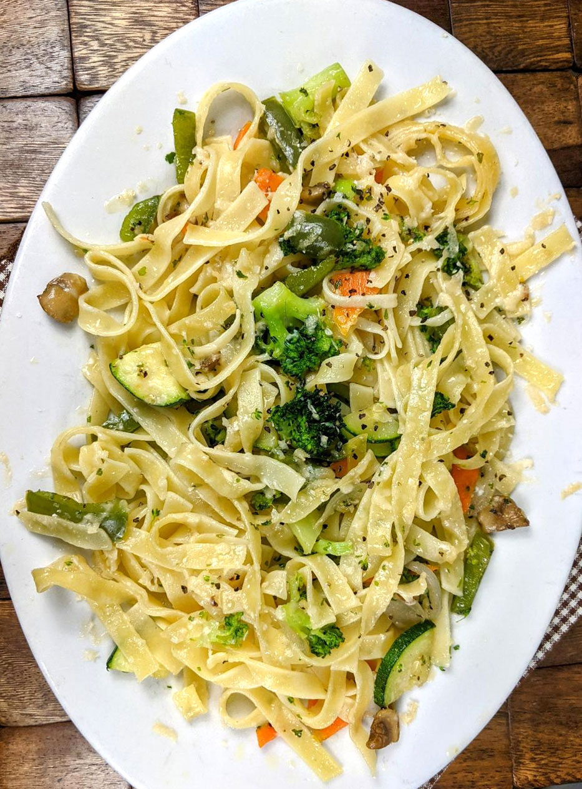

Pasta Primavera

Description
Pasta Primavera is a beautiful spring vegetable pasta made famous by Le Cirque, a swanky French restaurant in New York.
Here is how to prepare it
First you'll need...
Ingredients
- Pasta
- Garlic
- Red onion
- Yellow squash and zucchini
- Red pepper flakes
- Cherry tomatoes
- Pecorino cheese
- Fresh lemon juice
- Fresh basil and tarragon
- And salt and pepper
Directions
- First, cook the pasta in a large pot of salted boiling water. Drain it when it's just al dente. It'll cook a little more with the veggies on the stove, so you want to be careful not to overcook it now. Toss the pasta with a drizzle of oil to prevent sticking.
- Next, sauté the veggies. Heat a glug of olive oil in a large skillet, and toss in the garlic, onion, zucchini, squash, and cherry tomatoes. It only takes a few minutes for the vegetables to soften.
- Then, add the pasta,cheese, and lemon juice. Toss until the cheese melts down and coats the pasta in a lightly creamy sauce. Stir in the fresh herbs, and season to taste.
- Finally, garnish with more basil, and serve!
Homepage